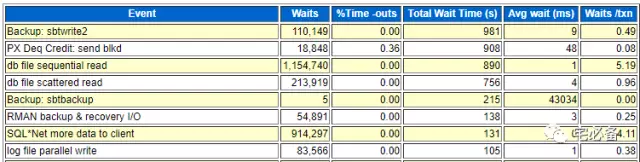
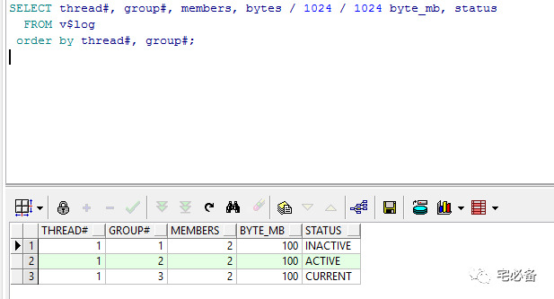
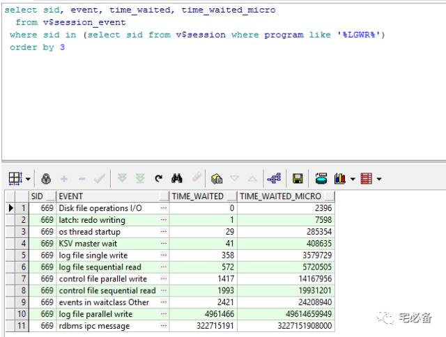
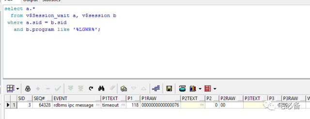

log file parallel write等待事件
原创 2017-07-26 Oracle 宅必备
从今天开始讲解awr报告Top 5 Timed Events部分
今天讲log file parallel write等待事件
log file parallel write

如何发生的
上节我们介绍了log file sync 等待事件，知道其发生在LGWR 进程将log buffer 内容写入redo log时产生
我们知道为了冗余考虑，redo log组一般都会有多个成员，log file parallel write 中的parallel指的是并行的写入多个redo log成员文件
log file parallel write 指的是LGWR进程并行的将log buffer中的内容写入redo log，在全部写入到所有redo log前的等待计入log file parallel write 等待事件
查看redo log文件情况
SELECT thread#, group#, members, bytes / 1024 / 1024 byte_mb, status
FROM v$log
order by thread#, group#;

可以看到该数据库有是单实例，有3个日志组，每个组有2个成员日志文件
log file sync(LFS)和log file parallel write(LFPW)对比
通过上面的定义我们知道LFS和LFPW都是等待LGWR进程完成I/O操作
LFS是用户进程等待LGWR进程完成I/O操作 LFPW是LGWR进程本身等待其I/O操作完成
例如有五个用户进程同时commit，每个完成耗时都是10ms
则LFS次数增加五次，LFS的wait time 增加50ms
而LFPW次数增加一次，LFPW的wait time增加10ms
注意LGWR 进行写日志动作原因有很多，用户commit只是其中一个
- 每三秒钟
- 每一次commit/rollback
- 当其 1/3满的时候，这个由_LOG_IO_SIZE参数控制
- 当其达到1M的时候
查看LGWR进程等待情况(整体)
通过上面的讲解我们知道LGWR事件只由LWGR进程产生，我们可以查询
select sid, event, time_waited, time_waited_micro
from v$session_event
where sid in (select sid from v$session where program like '%LGWR%')
order by 3

通过上图我们可以看到LGWR进程主要的等待在哪里
- rdbms ipc message 表示LGWR正在等待写redo log，表示其处于空闲状态，我们不必理会
- log file single/parallel write 即我们今天所说的LGWR写redo 文件
其他的暂不讨论，大家可自行搜索
注意该视图中的数字是从实例启动起来的累计值
查询当前LGWR进程状态(实时)
select a.*
from v$Session_wait a, v$session b
where a.sid = b.sid
and b.program like '%LGWR%';

通过上图我们发现当前LGWR进程处于空闲状态，如发现为log file write等说明目前 LGWR进程正在繁忙
如等待事件为log file parallel write 则其参数意义如下
P1：需要写入的redo log的数量，即日志文件组的成员数量
P2: 需要写入每个redo log 成员的redo block数
P3：写入完成需要进行的I/O请求次数
原因及改善
如果log file sync 等待事件占有过多的CPU时间，我们就需要注意了
- 低速的磁盘可能会导致LGWR进程写文件较慢从而导致log file sync等待，我们可以简单的通过avg waits 来判断，10ms是期望的数值，30ms也是可以接受的，如果大于这个数值则需要放到高速的磁盘
- 减少日志组中成员的数量可减少I/O此时从而减少log file parallel write等待
- 设置合适大小的redo log file，这点可以通过检查redo log 切换的频率查看是否正常，具体脚本见下面
- 服务器CPU内存资源不足会导致进程相应缓慢，同样会增加log file sync等待，所以在调优时首先保证系统资源充足
- 过大的log buffer 大小，log buffer过大可能导致刷新过于次数过低，从而导致单次刷新过慢，关于log buffer的调优可关注后续内容
- 过多的commit操作，通过上面我们知道每次commit操作都会导致LGWR写操作，如commit过多则该等待则会明显的上升
查看日志切换频率
直接将如下代码执行(PLSQL请使用command界面)
column h0 format 999
column h1 format 999
column h2 format 999
column h3 format 999
column h4 format 999
column h5 format 999
column h6 format 999
column h7 format 999
column h8 format 999
column h9 format 999
column h10 format 999
column h11 format 999
column h12 format 999
column h13 format 999
column h14 format 999
column h15 format 999
column h16 format 999
column h17 format 999
column h18 format 999
column h19 format 999
column h20 format 999
column h21 format 999
column h22 format 999
column h23 format 999
column avg format 999.99
column day format a6
SELECT TRUNC (first_time) "Date", TO_CHAR (first_time, 'Dy') "Day", COUNT (1) "Total",
SUM (DECODE (TO_CHAR (first_time, 'hh24'), '00', 1, 0)) h0,
SUM (DECODE (TO_CHAR (first_time, 'hh24'), '01', 1, 0)) "h1",
SUM (DECODE (TO_CHAR (first_time, 'hh24'), '02', 1, 0)) "h2",
SUM (DECODE (TO_CHAR (first_time, 'hh24'), '03', 1, 0)) "h3",
SUM (DECODE (TO_CHAR (first_time, 'hh24'), '04', 1, 0)) "h4",
SUM (DECODE (TO_CHAR (first_time, 'hh24'), '05', 1, 0)) "h5",
SUM (DECODE (TO_CHAR (first_time, 'hh24'), '06', 1, 0)) "h6",
SUM (DECODE (TO_CHAR (first_time, 'hh24'), '07', 1, 0)) "h7",
SUM (DECODE (TO_CHAR (first_time, 'hh24'), '08', 1, 0)) "h8",
SUM (DECODE (TO_CHAR (first_time, 'hh24'), '09', 1, 0)) "h9",
SUM (DECODE (TO_CHAR (first_time, 'hh24'), '10', 1, 0)) "h10",
SUM (DECODE (TO_CHAR (first_time, 'hh24'), '11', 1, 0)) "h11",
SUM (DECODE (TO_CHAR (first_time, 'hh24'), '12', 1, 0)) "h12",
SUM (DECODE (TO_CHAR (first_time, 'hh24'), '13', 1, 0)) "h13",
SUM (DECODE (TO_CHAR (first_time, 'hh24'), '14', 1, 0)) "h14",
SUM (DECODE (TO_CHAR (first_time, 'hh24'), '15', 1, 0)) "h15",
SUM (DECODE (TO_CHAR (first_time, 'hh24'), '16', 1, 0)) "h16",
SUM (DECODE (TO_CHAR (first_time, 'hh24'), '17', 1, 0)) "h17",
SUM (DECODE (TO_CHAR (first_time, 'hh24'), '18', 1, 0)) "h18",
SUM (DECODE (TO_CHAR (first_time, 'hh24'), '19', 1, 0)) "h19",
SUM (DECODE (TO_CHAR (first_time, 'hh24'), '20', 1, 0)) "h20",
SUM (DECODE (TO_CHAR (first_time, 'hh24'), '21', 1, 0)) "h21",
SUM (DECODE (TO_CHAR (first_time, 'hh24'), '22', 1, 0)) "h22",
SUM (DECODE (TO_CHAR (first_time, 'hh24'), '23', 1, 0)) "h23", ROUND (COUNT (1) / 24, 2) "Avg"
FROM gv$log_history
WHERE first_time >= trunc(SYSDATE) - 30
and thread# = inst_id
GROUP BY TRUNC (first_time), TO_CHAR (first_time, 'Dy')
ORDER BY 1 DESC;